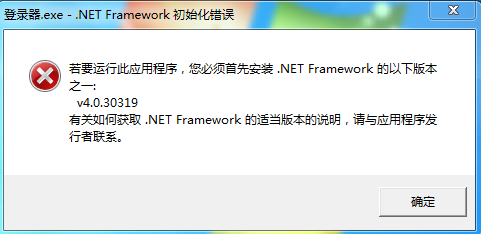
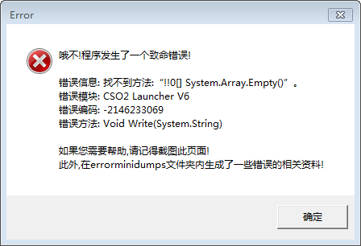
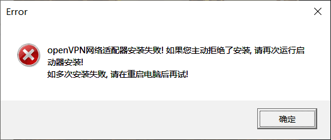
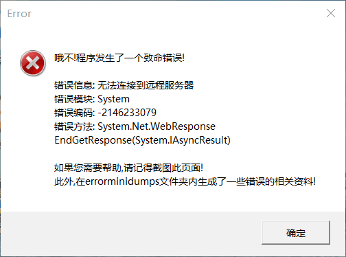

您现在的位置是：首页 > CSO2_游戏疑难解答区
关于CSO2启动器停止工作,或是报错等等各种类型的问题解决方法
简介:首先我们需要搞清楚是什么导致的这些问题,以及应该如何解决它们.我在下面列举了几个常见的错误例子和解决的方法,希望看完这篇文章后你可以自己解决所遇到的关于CSO2启动器的问题.
错误一、 打开启动器显示停止工作
解决方法: 下载并安装.NET Framework 4.7.2 C++ 32位 2015-2019运行库
少数Win8系统无法安装.NET 4.7.2 可以在群文件下载旧版本登录器 版本号:6.4.3.7
错误二、 未能解析此远程名称
解决方法: 本地网络有问题,建议检查网线,路由器,DNS是否正常
错误三、 无法连接Openvpn,虚拟网络适配器安装失败
解决方法: 这类问题多数发生在网吧用户,原因是网吧有特殊安全系统限制驱动安装程序,如若不是请关闭杀软重新尝试安装.
以上就是所有关于启动器方面的问题解决方法.
以下就是所有关于启动器方面的问题示例图.





上一篇：暂无
下一篇：关于生化Z如何添加BOT...